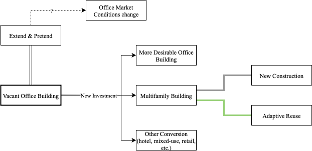
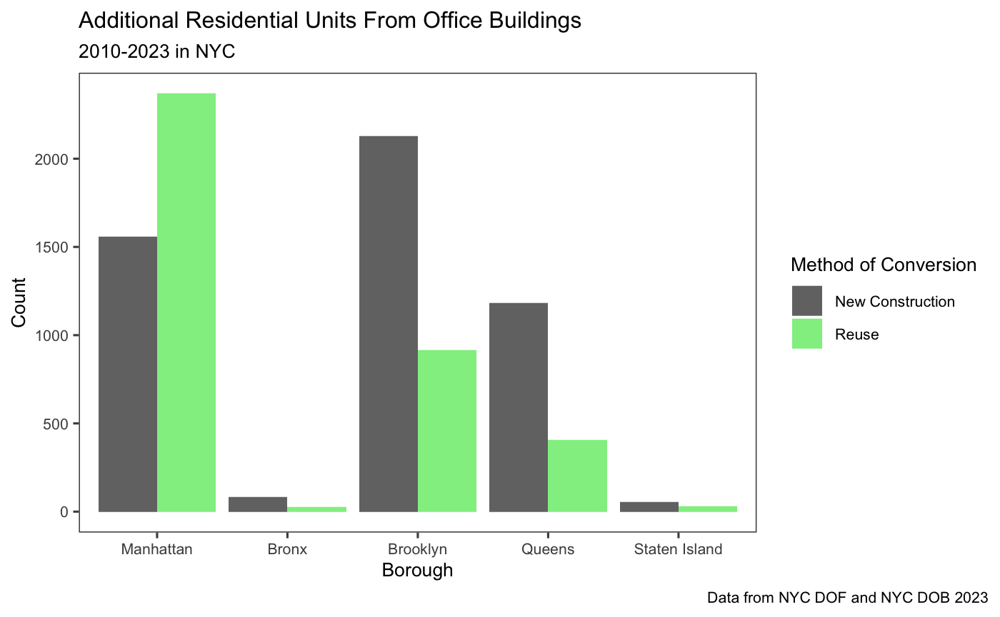
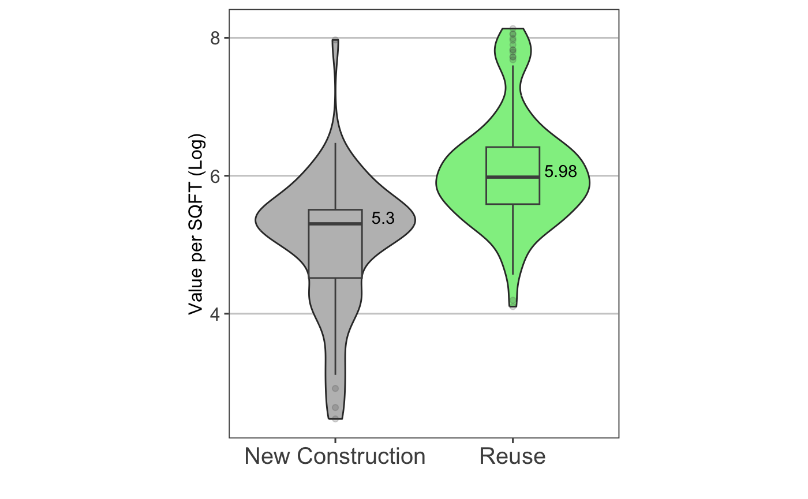

Columbia University Student, Writer and Data Analyst.
At the intersection of Economics, Social Equity, and the Built Environment

Fig 1: Outcomes for a Vacant Office Building

Fig 2: Residential Units added from Office Building Conversion by Borough

Fic 3: Adaptive Reuse vs. New Construction Cost per Square Foot
The Power Broker by Robert Caro
The Death and Life of Great American Cities by Jane Jacobs
The Economy of Cities by Jane Jacobs
In Defense of Housing by David Madden and Peter Marcuse
New Orleans Under Reconstruction: The Crisis of Planning by Various Authors
hirsch.contact hosted at gmail.com
August 2026
Brooklyn, NY
Built DIY, Hosted with GitHub Pages